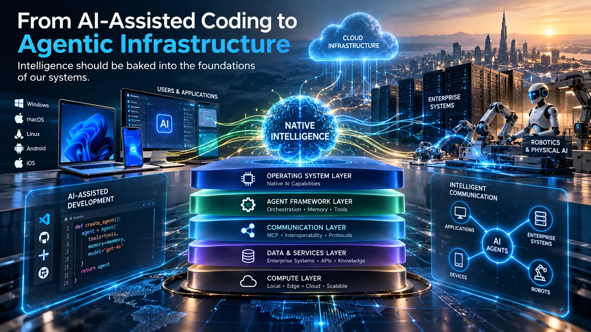

Journal.
Essays and technical notes on agentic architecture, AI engineering, enterprise systems and the infrastructure that connects them.
1 essay
Updated 25 October 2026
Latest · Essay
From AI-Assisted Coding to Agentic Infrastructure
Why the future of software depends on intelligence built into the foundations of our systems, from operating systems and MCP to enterprise systems and robotics.

Archive
Newest firstOlder essays will be listed here as they publish. The journal currently has one entry, featured above.
New writing will focus on agentic architecture, MCP and tool connectivity, AI engineering and production readiness.